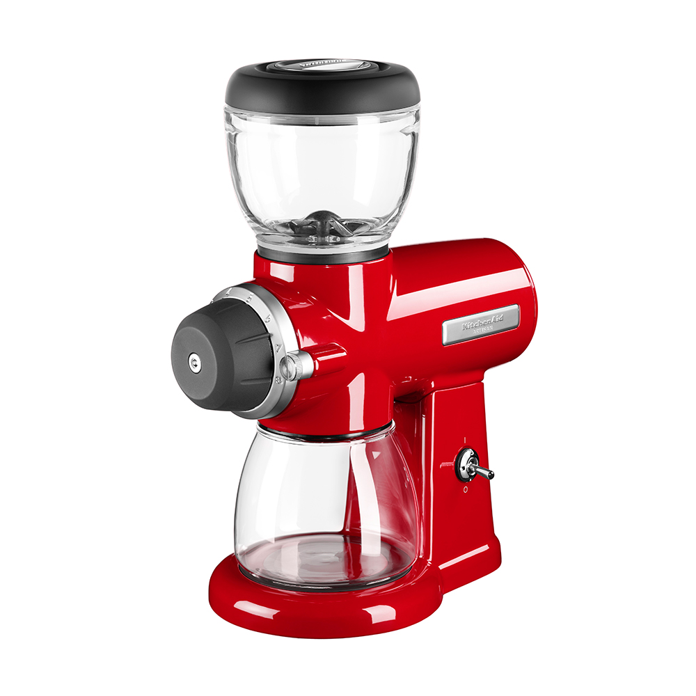

Кофемолка BORK J801 VS KitchenAid 5KCG0702
Современная техника отличается от ретро тем, что экономит самое ценное на сегодняшний день – время. Ретро дизайн - это на любителя, а вот ретро технологии это вчерашний, а быть может и позавчерашний день.
KitchenAid 5KCG0702
Преимущества KitchenAid, которые пытаются продать:
- Дизайн и выбор цветов
- Компания, которая изобрела миксеры в 1919 году
- KitchenAid переводится, как кухонный помощник
- Цельнометаллический корпус предотвращает вибрацию во время работы
Характеристики KitchenAid:
- Потребляемая мощность: 185 Вт
- Тип работы: жерновая
- Вместимость лотка для зёрен: 198 г
- Вместимость лотка для молотого кофе: 241 г
- Материал контейнера для зёрен: стекло
- Тип управления: механическое
- Количество степеней помола: 15
Преимущества кофемолки BORK J801:
- Современный тип управления (дисплей, индикация времени и степени помола) обеспечит комфорт и точность при пользовании кофемолкой.
- Наличие функции таймера освобождает пользователя от контроля процесса помола. Пока кофемолка выполняет работу, вы используете время по своему усмотрению
- Больший выбор степеней помола (60 степеней) обеспечивает плавный переход между размером гранул, как следствие, возможность добиться идеального результата при приготовлении напитка.
- Вместимость лотка для зерен (450 г) позволяет засыпать среднюю упаковку зерен и хранить их без доступа воздуха благодаря герметичной крышке.
- Возможность совершать помол кофе в герметичный контейнер для хранения или сразу в холдер.
- Более лёгкое обслуживание: контейнер для кофе и жернова снимаются двумя движениями. Есть съёмный поддон для просыпавшегося кофе.
- Реальная цена отличного продукта
Покупая KitchenAid, вы покупаете не только ретро дизайн, но и ретро технологии.